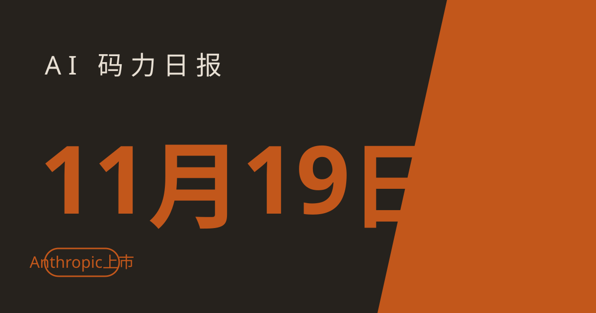

AI 码力日报 · 2026年11月19日

⚡ 一句话速览
- Anthropic 今天在纳斯达克挂牌，发行价定在 83 美元，高出原定区间上限，估值约 1.5 万亿美元。
- GPT-6.2 发布两天口碑两极：官方跑分赢了 Fable 5.2，独立测试却说编码没进步，还有人直接开骂。
- 微软 Ignite 甩出自研 MAI Code 2 编码模型，直接进了 GitHub Copilot，Copilot Autopilot 也开始向 Frontier 用户推送。
- OpenAI 的模型帮 AMD 改芯片设计，功耗性能面积最高提升 14%，部分改动已经进了流片。
🤖 今日 AI Coding 动态
Anthropic 今天上市：发行价 83 美元，首家上市的前沿模型公司
跟你有啥关系：写代码用的 Claude 背后这家公司今天变成上市公司了，之后它的每个动作都会被财报季盯着。Anthropic 11 月 18 日把 IPO 发行价定在每股 83 美元，高出之前 70~78 美元的发行区间（据 Bloomberg、CNBC 等多家媒体报道，截至撰写时尚未见最终招股文件确认），今天在纳斯达克挂牌，代码 ANT。825M 股对应募资约 685 亿美元，估值约 1.5 万亿美元；英伟达、Google、微软等 7 家科技公司还另有 260 亿美元的同步私募配售。S-1 文件披露的三季度营收 170 亿美元、同比涨 12 倍多，不过算力成本涨得比收入还快。散户也能参与：最多 20% 的份额预留给个人投资者，可通过 Schwab、Fidelity、Robinhood 等券商认购。Investopedia 报道
OpenAI GPT-6.2 Astra/Sol：官方说赢了 Fable 5.2，独立测试说编码原地踏步
跟你有啥关系：新旗舰已经进了 ChatGPT Work 和 Codex，换不换主力得看这两份互相打架的跑分。OpenAI 11 月 17 日发布 GPT-6.2 Astra（旗舰）和 Sol（日常款）：1.05M 上下文，Astra API 定价 8/40 美元每百万 tokens，比 GPT-6 Astra 便宜 20%，Sol 维持 2/10 美元。跑分得拆两边看（官方数据与独立测试，来源见链接）：
| 基准 | GPT-6.2 Astra | Claude Fable 5.2 | GPT-6 Astra（上代） |
|---|---|---|---|
| Artificial Analysis 综合指数 | 62 | 第一（高于 62） | 57 |
| Agents' Last Exam v1.1（OpenAI 自家） | 76.0%（成本 $2.05） | 72.8%（成本 $80.05） | — |
| Coding Agent Index（AA 独立） | 与上代持平 | 领先 | — |
| Terminal-Bench 科学等 | 领先（OpenAI 口径） | — | — |
社区反应很分裂：Theo Browne 直接骂这是"OpenAI 出过最差的模型"，另一派认为"同样的活便宜 20%，还要啥自行车"。我的看法：这是一次降价发布，不是能力发布——日常任务用 Sol 更划算，冲极限编码还是先看 Fable 5.2 和 Opus 5.5。另提一句：OpenAI 称 Astra 是首个达到"AI 自我提升 High 评级"的公开模型。The Rundown 报道
微软 Ignite：自研 MAI Code 2 进 GitHub Copilot，Copilot Autopilot 开始推送
跟你有啥关系：Copilot 的模型架上第一次有了微软亲儿子，而且以后 Copilot 可能自己帮你把活干完。微软 11 月 17 日 Ignite 大会首日发布 7 个自研模型：MAI Code 2 和 Code 2 Flash 是旗舰编码模型，现已在 GitHub Copilot 模型选择器和 Copilot Fusion 里可用，也进了 Foundry；另外还有 Cyber 2 Flash（安全）、Image 2.7、Realtime 1、Transcribe 2 和决策模型 Decision 1.1。微软称 Code 2 是"日常企业编码任务性价比前沿"，同时开放 MAI Licensed Weights——可信客户能拿到模型权重。Copilot 本身也在变：Autopilot 是个 24×7 持续干活的自主 agent，先向 Frontier 项目客户推送；Copilot Home 和 Office 内嵌编辑正式可用。自研芯片 Maia 300 也亮相，称每瓦 token 数比主流 GPU 系统高 40%。提醒一句：这次的模型对比都出自微软自己的评估，独立跑分还没出来。微软官方博客
OpenAI 的模型帮 AMD 改芯片：PPA 最高提升 14%，部分改动已进流片
跟你有啥关系：模型开始反哺造模型的硬件了，下一代芯片可能会因此来得更快。OpenAI 11 月 18 日发文：自家模型重写 AMD 旗舰 GPU IP 的 SystemVerilog RTL 电路代码后，功耗、性能、面积（PPA）相对 AMD 工程师多年优化过的基线最高提升 14%，不到 5 个月干了约等于一年的进度，部分改动已被 AMD 放进送去制造的设计。同一套方法也用在 OpenAI 自己的首款推理芯片 Jalapeño 上：向量单元标准单元面积省约 13%、矩阵单元省约 10%，已在真实硅片上验证。五代模型横评 RISC-V 核心设计任务，GPT-6.2 Astra 拿了最高分。OpenAI 还在和 Synopsys 联合训练 GPT-Synopsys，让模型像资深芯片工程师一样用 EDA 工具。Unite.AI 报道
Google Genie 4 向 Ultra 用户开放：世界模型终于带声音了
跟你有啥关系：想玩实时交互世界模型的人，现在不用再等内测邀请了——前提是你订了 Ultra。Google 11 月 18 日把 Genie 4 放进 Project Genie，向符合条件的 Google AI Ultra 订阅用户开放：边走边用一句话改世界（换天气、加角色、改剧情），画面首次配上实时原生音频——环境音、音乐、角色对话都跟着场景走。Genie 3 还留在模型选择器里，适合要更长运行时间的场景；Pro 用户可以先排队。所有生成内容都带 SynthID 水印。提醒一句：场景一致性目前只能维持约两分钟，复杂编辑后细节还会漂移，离能当正经模拟器用还有距离。Google 官方博客
Gemini 登陆低内存安卓机：2GB 内存的老手机也能用 Gemini 了
跟你有啥关系：手里那台便宜安卓机终于能跑上完整的 Gemini，而不是阉割版助手。Google 11 月 18 日宣布把 Gemini 应用带到符合条件的 Android（Go edition）低内存设备：重新架构后核心体验能在小内存硬件上流畅跑，Gemini Live（45+ 种语言）和自定义图片生成都包含在内。帮助页给出的门槛是 2GB 内存及以上。Google 称全球有数亿人用这类低内存设备。Google 官方博客
Meta 个人 agent Muse 登陆澳大利亚：能连 Gmail、订餐厅、管日程
跟你有啥关系：Meta 那个"不只回答问题、而是替你干活"的 agent 开始出海了，看看它长什么样能猜到下一站。Meta 11 月 17 日宣布个人 AI agent Muse 在澳大利亚上线：iOS、安卓、Mac 和网页都能用，AI 眼镜支持随后就到。能接 Gmail、Google 日历、Instagram 和 OpenTable，管邮件、协调日程、订餐厅；本地合作方包括 Canva、Domain、Kogan、MECCA、Officeworks、realestate.com.au、SWEAT、ShopBack 和 Ticketek，功能分批上线。Meta 称 Muse 跑在专用的 Muse Secure VM 上，密码和支付信息不进 agent 的视线；敏感操作前会先征求用户确认。大部分功能免费，重度功能要订阅。Meta 官方公告
阿里、腾讯、Moonshot 新模型集体砍掉黑客能力，中国或禁出口 AI 攻击技术
跟你有啥关系：以后国产大模型在安全攻防这块会越来越"守规矩"，指望它们写 exploit 的路基本断了。据 Bloomberg 11 月 17 日报道，阿里、腾讯、Moonshot 的最新模型普遍限制了进攻性网络能力、同时加强漏洞检测与防御：Qwen4-Max 在训练数据里过滤了可用于网络攻击的内容，且权重不公开、用户拿不到未过滤版；腾讯也在 Hy4 正式发布前砍掉了 exploit 生成、逆向工程等网络安全功能。背景是中国商务部 10 月 16 日就修订技术进出口目录公开征求意见，拟禁出口 AI 驱动的恶意代码生成与变异技术等 23 项，征求意见期 11 月 15 日结束、最终目录还没公布。AI Morning Brief 转述
🔧 工具更新日志
Claude Code 2.1.323：Code Mode 让 Claude 自己写 JS 批量调工具
Anthropic 11 月 12 日在 Claude Code 2.1.323 里加了个实验性开关 Code Mode：以前 Claude 一次调一个工具、读完结果再想下一步；开了之后它直接写一段 JavaScript，把一批工具调用一次跑完、只把需要的那部分结果读回上下文。开启方法是一个环境变量：CLAUDE_CODE_EXPERIMENTAL_CODE_MODE=1 claude。两个外部小测试测出 token 能省 37%~55%，速度没变快、有的反而更慢。限制不少：仅交互式终端、仅 Anthropic API 直连（Bedrock、Google Cloud、Foundry 都不行）、支持 Opus 5.5、Sonnet 5.5、Haiku 5.5 和 Fable 5.2；2.1.325 已修了 3 个相关 bug。我的建议：跨多文件重复改动、要先过滤再读的搜索，这类活可以开来试试；但它明确标注实验性、随时可能改，别把关键流程押上。Code Mode 详解
Codex CLI 0.170.0：TUI 里能实时语音通话了
OpenAI 11 月 18 日发布 Codex CLI 0.170.0：TUI 里加了实时语音通话的 WebRTC 协商；另外实验性支持在不同环境里用同名的 MCP 服务器。升级一句命令：npm install -g @openai/codex@0.170.0。完整更新日志
💬 社区热议
HN 858 分：Nginx 曝两个无需认证的远程代码执行漏洞，其中一个藏了 11 年
Wiz 等 5 个团队各自独立发现、11 月 18 日 coordinated 披露：CVE-2026-123633（HTTP/2 连接 use-after-free）和 CVE-2026-123007（send_window 整数下溢），CVSS 4.0 都是 9.2，都要开 HTTP/2 才会被打；后者藏在代码里的时间从 Nginx 1.9.5（2015 年）算起。Wiz 在只提供静态文件的官方 1.31.7/1.31.8 构建上演示了绕过 ASLR 的代码执行，不需要后端应用也不需要第三方模块。F5 当天发了修复版 1.30.7（stable）和 1.31.9（mainline）。评论区最扎心的点是：这两个漏洞是 Wiz 的 AI 代码扫描工具先翻出来的——AI 找漏洞的速度已经追上人类审计了。还没打补丁的先把 http2 off; 加上顶一顶。Wiz 官方披露 · HN 讨论
HN 354 分：微软一次甩 7 个自研模型，评论区在吵"摆脱 OpenAI 依赖"
Ignite 首日的模型发布冲上 HN 首页，237 条评论。支持派认为微软终于有了自己的模型底牌，Copilot 不再只是 OpenAI 的壳；怀疑派盯着两点：一是所有对比都出自微软自己的评估，二是 MAI Code 2 到底能不能打过 Claude 和 GPT 还得等独立跑分。还有人翻出旧账：纳德拉前几天刚说 Claude Code 让微软措手不及，这次的回应来得很快。我的看法：模型是其次，关键是 Copilot Autopilot——微软想把 Copilot 从"问答框"变成"替你干活的员工"，这条路走通了比多一个模型重要。HN 讨论
GPT-6.2 发布两天，社区吵成两派：有人骂"史上最差"，有人说"便宜就是正义"
OpenAI 刚发 GPT-6.2，X 和 IG 上的测评就吵翻了。一派拿 Artificial Analysis 的数据说话：编码指数相对上代原地踏步，Sol 还掉了 3 分，Theo Browne 直接骂这是"OpenAI 出过最差的模型"，说像是赶工出来的 GPT-5 翻版。另一派拿 OpenAI 自家的成本对照表反击：Agents' Last Exam 上 Astra 比 Fable 5.2 高 3.2 分、成本只有对方的 5%，"同样的活便宜 20%，还要啥自行车"。吵到最后共识其实挺清楚：这是一次降价发布，不是能力发布——要冲极限编码成绩的继续用 Claude，要省钱跑日常任务的可以换 Sol 试试。IG 测评视频
Terminal-Bench 4.1 新榜：Copilot Fusion 71.2% 登顶，Opus 5.5 和 Fable 5.2 并列第二
GitHub 官方账号贴了 Terminal-Bench 4.1 的最新榜单：Copilot Fusion（max）以 71.2% 拿第一，Opus 5.5（max）和 Fable 5.2（max）在 Claude Code 下都是 65.8% 并列第二，后面是 Gemini 4 Carbon、Sonnet 5.5、GPT-6.1 Sol、GPT-6 Astra、Kimi K3.1 Pro 等。值得注意的是榜单也标了成本：Copilot Fusion 这次跑了 33 亿 tokens、花了约 2000 美元——分数是刷出来的还是烧出来的，值得多看一眼。GitHub 官方帖子
KPMG 试了一把：100 多个 AI agent 审账，问的问题比人类审计师还好
金融时报爆出来的试验：KPMG 英国让 100 多个 AI agent 和常规审计团队并行审了一家 FTSE 250 上市公司的账（内部代号 Project Exponential），审计主管 Cath Burnet 说 AI 在好几个地方"挖得深得多"、问出了人类审计师没问到的问题。另一面也很真实：有个 agent 没法把监管要求和公司文件对上号，得人类审计师出手干预；而且这次试验结果没用来出正式审计意见。KPMG 打算扩到 20 个更大的审计项目，但也承认离能接几千单的规模还差得远。评论区一句话总结得到位：AI 现在最擅长的是"把问题问得更好"，而不是"把责任担下来"。报道原文
🧩 AI 应用新品
Snapchat 开放 AR Lens 开发：用 Claude Code、Cursor 就能写 AR 滤镜
Snapchat 11 月 18 日向开发者开放用 AI 编程助手做 AR Lens 的工具：直接用 Claude Code 或 Cursor 写 Lens 逻辑，不用再啃 Lens Studio 的全套文档。对独立开发者来说，AR 滤镜的门槛从"学一个专用工具"降到了"会写提示词就行"。适合想试试 AR 开发、但不想从零学 Lens Studio 的人。TechCrunch 帖子
Arduino App Lab 0.12：把 OpenCode、Claude Code、Codex 塞进 Arduino 开发环境
Arduino 的 App Lab 出了 0.12 版，亮点是内置了 AI agent：OpenCode 已经能用，Claude Code 是预览版，Codex 标着即将推出；还能再挂别的模型——Google Gemini、OpenCode Zen、Anthropic、OpenAI、OpenRouter、GitHub Copilot 都在列表里。玩 Arduino、ESP32 这类硬件的人，现在可以在 IDE 里直接让 agent 写固件代码、不用再切出去问聊天机器人了。原帖
🐑 今日羊毛
Claude Guest Pass：找个 Pro 朋友要链接，白嫖 7 天 Pro（含 Claude Code）
一句话：Anthropic 的官方邀请机制，Pro/Max/Ultra 订阅用户能分享 7 天免费 Pro（Claude Code、Cowork、Claude Design 全含），不用自己花钱试。
- 怎么薅：找个用 Pro 或 Max 的朋友，让他在 Claude Code 里输入
/passes生成邀请链接发你；点链接注册（要绑卡，7 天内不扣费），仅限从没付费订阅过 Claude 的人。规则详解 - 有效期：名额先到先得，领到后 7 天内有效（截至撰写时）；记得 7 天内取消，否则自动转成每月 20 美元的付费 Pro
- 适合谁：想试 Claude Code 但还没付过钱的人；约省 ¥140
美国 K-12 教师免费领 ChatGPT，OpenAI 军人/退伍军人免 1 年 Plus
一句话：两类定向免费——美国 K-12 教师能领 ChatGPT 教师版；美国现役军人和退伍军人能免 1 年 ChatGPT Plus。
- 怎么薅：教师走 OpenAI 官网的教育优惠页验证教师身份申请；军人/退伍军人走 OpenAI 官网的军人优惠页验证身份领取。各家免费方案汇总
- 有效期：两项目前均开放申请（截至撰写时），先到先得
- 适合谁：美国 K-12 教师、美国现役军人和退伍军人；Plus 一年约省 ¥1700
Microsoft 365 with Copilot：新用户免费试 1 个月
一句话：微软 365 含 Copilot 的版本新用户能免费试 1 个月，适合想在 Word/Excel 里直接用 Copilot 的人。
- 怎么薅：去微软官网 Microsoft 365 页选含 Copilot 的方案，新用户领 1 个月试用，要绑卡。各家免费方案汇总
- 有效期：新用户 1 个月试用（截至撰写时），到期记得取消
- 适合谁：日常重度用 Office、想试 Copilot 嵌进文档里什么样的人
⭐ 今日 GitHub 热门项目
aliyun/ai-agent-handbook
阿里云开源的企业级 AI agent 建设指南：架构设计、搭建、运营、治理、优化全生命周期都覆盖了，不是零散的技巧合集。解决什么问题：团队要落地 agent 时缺一张完整的施工图，这个就是。⭐ 约 3.4K（截至撰写时）。适合：正在给公司搭 agent 体系的工程师和架构师。项目地址
lnkiai/m3e-canvas
免费开源的浏览器端应用界面设计工具：用 Material 3 Expressive 组件在网页上画界面，还能直接生成喂给 AI coding 工具的设计提示词。解决什么问题：让 AI 写界面之前，先把设计稿和提示词一次定好，少返工。⭐ 约 10.6K（截至撰写时）。适合：用 AI 做前端、又不想每次都从空白提示词开始的人。项目地址
affaan-m/ECC
一套 agent harness 性能优化系统：skills、直觉、内存、安全、研究优先开发打包在一起，覆盖 Claude Code、Codex、opencode、Cursor 等多个 agent。解决什么问题：agent 用久了变慢变飘，缺一套调教 harness 的方法论，这个就是干这个的。⭐ 约 305,910（截至撰写时）。适合：天天泡在 Claude Code/Codex 里、想把 agent 调得更顺手的人。项目地址
🤗 Hugging Face 热门模型
harness-hub/Qwen3.8-27B-pi-adapted：一个 LoRA 让 Qwen3.8 编码分暴涨 25 个点
Hugging Face 官方团队用强化学习给 Qwen3.8-27B 训了个专供 pi coding agent 用的 LoRA 适配器：SWE-bench Pro 最难 51 题从 39.2% 涨到 64.7%，Terminal-Bench 2.1 从 39.5% 涨到 55.8%。最狠的是它关掉思考模式就能达到底模型开满思考的精度，生成 token 却只有约四分之一——省钱又省时间。还给了 GGUF 版，llama.cpp 也能跑。适合：本地跑开源编码 agent、不想为思考 token 买单的人。模型地址
radixark/DaisyRose-27B：1200 个任务的 RL，让 Qwen3.8 的终端基准翻倍
RadixArk 的首个模型，基于 Qwen3.8-27B、用自家 Miles 框架做强化学习后训：只用了 1200 个精选任务、在 144 块 H200 上训了 18 天，Terminal-Bench 4.1 pass@1 从 5.6% 翻到 12.0%，其他推理、指令遵循和编码基准也全线高于底模型。Apache 2.0 协议，给了 BF16、FP8、NVFP4 三种权重，256K 上下文。适合：想研究"小数据 RL 后训能把模型推多远"的人，或者直接拿来当开源 agent 底座。模型地址
🛠️ 值得一试的工具：NVIDIA Agent Skills
是什么：英伟达官方的 agent skill 大全，431 个 skill 覆盖 CUDA、机器人、仿真、RAG、Physical AI 等 22 个领域，每个都是教 agent 怎么用某款 NVIDIA 软件的标准说明书，能直接装进 Claude Code、Codex、Cursor。解决什么痛点：以前 agent 碰到 NVIDIA 工具全靠猜，装上对应的 skill 等于给它发了一本专家手册——英伟达自己的测试称部分场景效果能提升几十个点（厂商口径，仅供参考）。免费额度：开源免费，一句 npx skills add nvidia/skills 就装上，也能走 Claude Code 官方插件市场的 nvidia-skills。
verdict：值得试——但别 431 个全装，既占上下文又未必都准；先挑一个你天天用的 NVIDIA 工具对应的 skill，见效再扩。
🎓 3 分钟小教程：打开 Claude Code 的 Code Mode，让工具调用一次跑完
前置条件：Claude Code 2.1.323 或更新版，在交互式终端里用，Anthropic API 直连（走 Bedrock、Google Cloud、Foundry 的不行）。
- 带环境变量启动：
CLAUDE_CODE_EXPERIMENTAL_CODE_MODE=1 claude - 第一次会弹确认，确认一次就行，之后这个会话里就一直开着
- 正常提需求就行——比如"把这 5 个文件里的旧函数名全换掉"，Claude 会把一批工具调用写成一段 JS 一次跑完，不用你一步步等
- 最适合三类活：跨多文件的重复改动、要先过滤再读的搜索、多个能并行的独立命令
预期效果：外部小测试显示 token 能省 37%~55%，但速度不一定变快；实验功能随时可能改，重要的活别全押上，顺手了再当成日常开关。
数据截至撰写时，仅供参考。